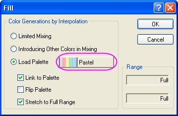

Sich überschneidende Farboberflächen
3D-Surface-Intersect-Mat
Zusammenfassung
Origin unterstützt mehrere sich überschneidende Oberflächen.
Origin-Version mind. erforderlich: Origin 9.0 SR0
Was Sie lernen werden
Dieses Tutorial zeigt Ihnen:
- sich überschneidende farbige Oberflächen aus verschiedenen Matrixobjekten erstellen.
- Oberflächendiagramme mit Farbabbildung benutzerdefiniert anpassen.
- zusätzliche Farbskalen für mehrere Oberflächen mit Farbabbildung erzeugen.
Schritte
Dieses Tutorial basiert auf dem Projekt Tutorial Data: <Origin-Verzeichnis>\Samples\Tutorial Data.opj.
- Öffnen Sie das Projekt Tutorial Dataund navigieren Sie zum Ordner Intersecting Surfaces im Projekt Explorer.
- Aktivieren Sie die Matrix MBook36. Beachten Sie, dass die Matrix zwei Miniaturbilder über den Daten anzeigt, eines für jedes Matrixobjekt in der Matrix.
 |
Um sich überschneidende Oberflächen zu zeichnen, muss jedes Matrixobjekt über identische Dimensionen und XY-Abbildung verfügen. Diese Anforderung ist automatisch erfüllt, wenn zwei Objekte sich in derselben Matrix befinden.
|
- Wählen Sie eines der Miniaturbilder. Wählen Sie im Menü Zeichnen: 3D: Mehrere Oberflächendiagramme mit Farbabbildung. Dies erzeugt ein Diagramm mit sich überschneidenden Oberflächen von jedem Objekt im Matrixblatt.
- Öffnen Sie den Dialog Layereigenschaften, indem Sie doppelt auf den Diagrammlayer klicken oder indem Sie im Hauptmenü Format: Layer wählen. Wechseln Sie zur Registerkarte Beleuchtung und ändern Sie den Modus in Direktional, um den Lichteffekt einzuschalten.
Klicken Sie auf die Schaltfläche Übernehmen. Das Diagramm wird dann folgendermaßen angezeigt:

- Erweitern Sie den Zweig Layer 1 im linken Bedienfeld und wählen Sie [MBook36]MSheet1!_1(Z)[1*:400*], um den Dialog Diagrammeigenschaften zu öffnen. Wechseln Sie im rechten Bedienfeld zur Registerkarte Farbpalette/Kontur und deaktivieren Sie das Kontrollkästchen Konturen aktivieren, um die Konturlinien auszublenden.
- Klicken Sie auf den Spaltenheader Füllung..., um das Dialogfeld Füllung aufzurufen. Klicken Sie auf die Standardpalette Rainbow, um das Menü Palette zu öffnen. Wählen Sie im Palettenmenü Pastel aus. Klicken Sie auf OK, um den Dialog Füllung zu schließen.

- Wählen Sie [MBook36]MSheet1!_2(Z)[1*:400*] im linken Bedienfeld. Deaktivieren Sie das Kontrollkästchen Konturen aktivieren. Klicken Sie auf Übernehmen, um die bisherigen Modifikationen zu sehen. Tun Sie das Gleiche für [MBook36]MSheet1!_1(Z)[1*:400*].
- Lassen Sie [MBook36]MSheet1!_2(Z)[1*:400*] markiert, wechseln Sie zur Registerkarte Drahtgitter und deaktivieren Sie das Kontrollkästchen vor Aktivieren, um das Drahtgitter auszublenden. Tun Sie das Gleiche für [MBook36]MSheet1!_1(Z)[1*:400*].
Klicken Sie auf OK, um das Dialogfeld Details Zeichnung zu schließen und das Diagramm zu aktualisieren.
- Jetzt wird die zusätzliche Farbskala für die zweite Oberfläche erstellt. Aktivieren Sie die entsprechende Zeichnung und klicken Sie hierzu auf Data:2 [MBook36]MSheet1!_1(Z)[1*:400*]. Klicken Sie dann auf Einfügen: Farbskala. Die Farbskala für diese Zeichnung wird erstellt.
- Klicken Sie doppelt auf das neu hinzugefügte Objekt der Farbskala, um die Steuerung Farbskala zu öffnen, ändern Sie die Einstellungen entsprechend dem Bild unten und ziehen Sie die Farbskala dann auf die gewünschte Position im Layer:
- Sie können die Schaltfläche 3D-Drehung verwenden, um das Diagramm zu drehen und eine Über-Kopf-Perspektive zu erhalten. Diese Schaltfläche ist ein Teil der 3D-Symbolleiste, die durch einmaliges Klicken auf den Diagrammlayer aufgerufen werden kann.

Das Endergebnis sollte folgendermaßen aussehen: